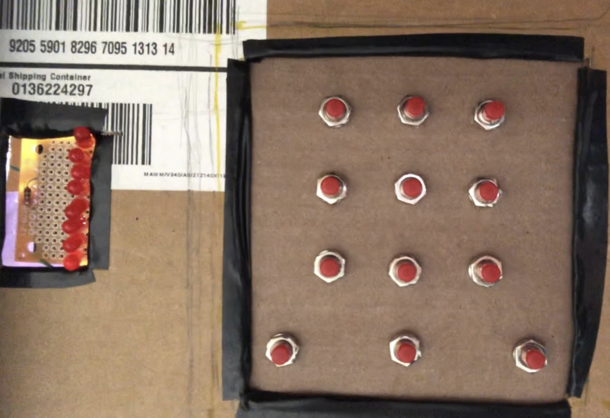
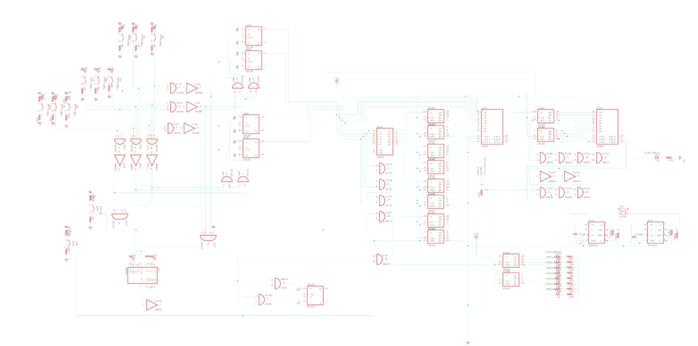

layout: post
title: "Vault Lock System"
date: 2019-12-20
excerpt: "Digital Logic Design Project"
project: true
tag: DLD
comments: false
Vault Lock System
We aimed to recreate such a system and build physical, working safely. A vault has three main parts: a way to set a password, a way to store that password, and a way to check if any inputted passwords are the correct password. Through the use of IC chips and other components that we learned about over the course of the semester, it is possible to build a working vault lock system. By simplifying the password input into a 4-bit coordinate system and taking advantage of shift registers, we were able to build a system that was able to fulfill each of the components of a working vault.

Team
Minjung Kwon, Esther Whang
User Interface
We designed the vault to take a password input from a 3 by 3 grid similar to the ones used in Android phones. Initially, the user would press the Enter switch and input any combination of 8 locations. They would then set that combination by pressing the Set switch and the box would lock. To unlock the vault, the user must press enter again and input the correct combination. If the user succeeds, then the Arduino system will unlock the door when the user presses the Check switch. An incorrect input would set off a loud alarm, exposing the thief.

The front of the safe would consist of 8 LEDs and 12 momentary switches, 9 for password input and 3 for the various settings of the system. A series of LEDs would indicate how many inputs the user has entered, ensuring that the user is aware when they have reached their 8 input limit. The 3 by 3 grid of switches would be the password input, which will only work when the Enter switch is pressed. The check and the set switch will only work when the switches have been pressed 8 times.
Password Set
The password set system takes the input from the 3 by 3 grid of switches and outputs the location of each switch as a 4-bit number. It also outputs the state of the entire system itself, as in whether the system is in “setting password” mode or “checking password” mode. For this part of the system we utilized a 4029 counter, 4025 Triple-Input NOR chip, 4013 D-type Flip Flop chip, 4069 Hex Inverter chip, and the switches.
Switch the input to 4-bit number

In order to do any kind of logic with the password, we first had to convert the location of each button into a binary number. We achieved this by designing a coordinate system for the 3 by 3 switches and having four D-type Flip Flops output the corresponding coordinates whenever a switch is pressed. We designed the coordinate system so that each button corresponds to a 4-bit number, the first two bits being the coordinate for the row and the second two bits being the coordinate for the column of the button. The exact coordinates are shown in the image above. Note that 00 was excluded because 0000 would mean that no button was pressed.
Clock
Before discussing the D-type Flip Flops for the coordinates in detail, we must first clarify what exactly is the clock for the entire system. Because we want the system to change whenever we press a switch on the 3 by 3 grid, we can simply make every press of the switch a clock pulse. The logic for such a system would be to simply OR all the buttons together. In this particular case, we took advantage of the triple input NOR chip to connect each row and each column at a time. Every button in one row is connected to one triple input NOR gate, and likewise for columns as well. This later allows us to isolate each input by row or column, which becomes useful for the D-Type Flip Flops.
D-Type Flip Flops for the Coordinates
We have four D-type Flip Flops, each one outputting the coordinate for the button that was most recently pressed. We control the D-type Flip Flops with the switch “clock” and the triple input NOR gate discussed above for the D input. As discussed before, each NOR gate is connected to an entire row or an entire column of switches. After NOT the output of the gate, we can put this output through logic so that the D-type Flip Flop changes to the appropriate value.
We can split the four D-type Flip Flops into two groups, the ones that represent the most significant bit of the coordinate and the one that represents the least; therefore, if the coordinate is 1010, then the first group deals with 1 and the second group deals with 0. The logic for the first group’s D input is (First Row/Column + Second Row/Column), while the logic for the second group’s D input is (Second Row/Column + Third Row/Column).
One problem with using the D-Type Flip Flops for the coordinates was the timing of the clock. Since the D-type flipflop’s Q output depends on what the D input was at the clock pulse, the clock pulse must come after the D input’s logic. However, since they are coming from the same source, the switches, the flip-flops did not always reliably change with the clock. To slightly delay the clock signal, we added a 150KΩ resistor, which resolved the issue.
Counter for the Enter Switch

The primary purpose of the counter was to limit the number of combinations possible for the password. For the counter, we used the 4029 up/down counter, with the switch “clock” as the clock for the counter as well. We configure the counter to count down from 8 by grounding and powering the JAM input pins so that the number 8 (1000 in binary) is also going into the jam pins. We then tie the PRESET pin of the counter to the Enter switch. Whenever the Enter switch is pressed, the high pulse from the switch would set the counter to start from 8. We also tie the NOT of the CARRYOUT of the counter to the CARRYIN so that the counter stops counting when it reaches 0.
D-type Flip Flop for the Set Switch
Now that we have the proper setup for taking input from the switches, we need a way to indicate that a satisfactory password combination has been chosen and that the system can move onto the “check password” part of the system. We can achieve this by setting up a D-type Flip Flop that will change value once 8 password switches and the Set switch have been pressed.
We would want the value to change when the counter is done and when the set of check switch is pressed. We achieve this by connecting the Set and Check switches with an OR gate, then connecting that and the NOT of the CARRYOUT with an AND gate. Now we have a clock for the D-type flip flop that only has a pulse when our conditions are met. The D input for this Flip Flop is the Comparator from the “check” part of the system, which will be explained in greater detail later in the documentation. It is sufficient to know that for now, when the comparator outputs 1, this means that the correct password has been inputted. Otherwise, it will be 0. This means that if we NOT that output from the Comparator and make that the D input, we can have the D-Type Flip Flop that has Q of 0 when the password is being set and 1 when the password has been set. This way we have a “variable” that keeps track of which state the vault lock system is in.
Shift Registers for Storing Password
To store the 4-bit coordinate from the D type Flip Flop, we used shift registers. Since we have 8 4-bit binary numbers, we used 4 CD4015 chips which include a dual 4-stage static shift register. Using a serial-input/parallel-output (SIPO) registers, we were able to use each shift register for each digit of password coordinates and store exactly 8 coordinates. To ensure that the coordinates are inputted into the shift registers only when the Set switch is pushed, we used a tri-state buffer (CD4503). The tri-state buffer needs to trigger when the system is in “setting password” mode. For this, we can use the Q’ of the D-type Flip Flop previously discussed. When the system is in “setting password” mode, the Q’ is 0, which we can use to enable the shift register. When the system shifts to “checking password” mode, the Q’ is 1, which would reset the shift register to zero so that the user can store the new 8-digit password. The last output (eighth output) of the shift register is connected to the first data input pin so that every digit of the password can be inputted to the comparator for checking.
Checking Password System
For checking the inserted password, we used two comparators (CD4585) and one shift register (CD4015). The checking system starts when the user presses the enter button and ends when the user pushes the check button. The checking system contains three stages. The first stage is to compare the entering inputs to the stored password using a comparator. The last four output pins (Q 4B) of the shift registers are connected to the first four input pins (A0 - A3) of the comparator. The rest of the input pins (B0 - B3) are connected to the entered password coordinate inputs; each pin is connected to each digit of the coordinate. This comparison allows us to individually compare each input with the previously set password. The second stage is to store the result of 8 comparisons from the input and stored password with a shift register. We reset this shift register whenever the set or enter button is pushed and is not looping to ensure that the shift register only contains data from one attempt at unlocking the vault. The last stage is to compare and test if these comparisons are correct with comparator and logic gates. All the input pins of the comparator are connected to eight output pins of the previous shift register which indicates the correctness of each input (1 if correct, 0 if wrong). If the user pressed a correct combination, the input of the comparator should be 11111111; therefore, the output will be 1. The user can check the result after inputting all 8 numbers and press the check button. If the user has not pressed 8 numbers or pushed the check button, neither unlock system nor alarm system operates since we used AND gates to make a check system to work only when those two conditions are made. To make sure the output of the comparator is 1 only when the inputs are 1, we added AND gate to check if there is a 0 for the first four comparisons. If there is, the alarm system operates.
Alarm

When the comparator outputs a 0 and the system is in “checking mode” (D-type FF output is 1), the alarm will sound. To set up the alarm, we used NOT gate to invert the output of the comparator and AND gates to add logic in order to make a complete logic for the alarm system that operates when the output of the logic is 1. When the alarm system is triggered by the logic, the speaker is turned on. We used a small speaker and two 555 timers. One timer is to create a square wave that generates a sound in the speaker and another is to make repeating beep sounds by controlling the first-timer. The first 555 timer is set as 500 Hz with 0.01µF capacitor and 150KΩ and 68KΩ resistors. The second timer is set as 2 Hz with a 4.7µF capacitor and two 51KΩ resistors.
Lock
The physical lock itself was built out of an Arduino, a voltage reader, and a servo motor. Ther servo motor served as our actual lock, rotating a piece of plastic in and out of a hole of both the door and the body of the vault. When the piece of plastic is in the hole, then the vault is unable to open without destroying the vault itself. We wrote a program for the servo motor so that it will rotate 90 degrees whenever the system is to unlock, thereby moving the piece of plastic out of the hole and allowing the box to open. The program for this is also in the Google drive. Since our system is to remain locked with the output is low and unlock when the output is high, we configured a way for the Arduino to read the voltage level using a resistor and the Arduino’s built-in sensor. Whenever the Arduino senses a voltage level above a certain threshold, it will turn the servo motor 90 degrees. When it is below, the motor will return to its locked position. The combination of a voltage reader and servo motor allowed us to create a physical lock that is controlled by the outputs of our vault lock system.
Schematics
